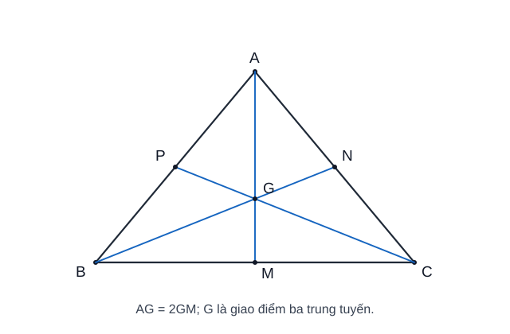
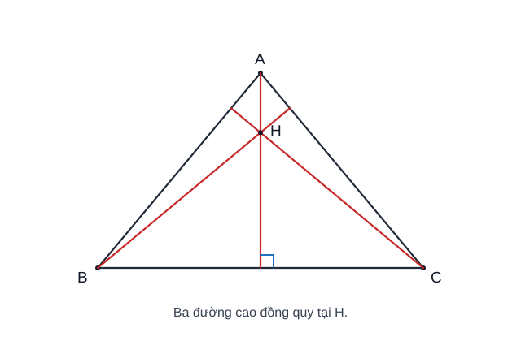
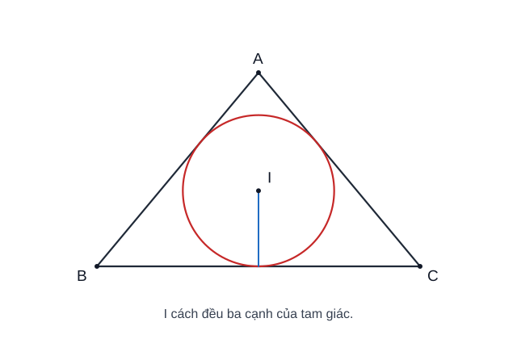
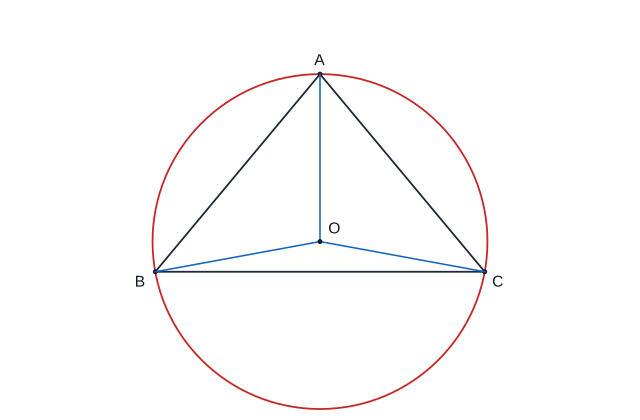

Chuyên đề 15 – Các đường đồng quy trong tam giác
Trạng thái: Đã kiểm định nội dung học thuật; cấu trúc Roadmap chuẩn 11 mục.
Lớp trọng tâm: 7 Mạch kiến thức: Hình học Mức ưu tiên: ⭐⭐⭐⭐
🧭 1. Bản đồ kiến thức
Các đường đặc biệt trong tam giác
│
├── Trung tuyến
│ └── Ba trung tuyến đồng quy tại trọng tâm G
│ └── G chia trung tuyến theo tỉ số 2 : 1
│
├── Đường cao
│ └── Ba đường cao đồng quy tại trực tâm H
│
├── Phân giác
│ └── Ba phân giác trong đồng quy tại tâm nội tiếp I
│ └── I cách đều ba cạnh
│
└── Trung trực
└── Ba trung trực đồng quy tại tâm ngoại tiếp O
└── O cách đều ba đỉnh
Mạch tư duy trọng tâm của chuyên đề:
nhận dạng đường đặc biệt → xác định tâm tương ứng → dùng tính chất đặc trưng → suy ra độ dài, khoảng cách hoặc quan hệ hình học.
Minh họa trực quan
1. Trung tuyến và trọng tâm

Ba đường trung tuyến của một tam giác đồng quy tại một điểm gọi là trọng tâm, thường ký hiệu là
G.
Một tính chất rất quan trọng:
Trọng tâm chia mỗi đường trung tuyến theo tỉ số
2 : 1, tính từ đỉnh.
Ví dụ, nếu AM là trung tuyến và G là trọng tâm thì:
AG = 2GM
2. Đường cao và trực tâm

Ba đường cao của một tam giác đồng quy tại một điểm gọi là trực tâm, thường ký hiệu là
H.
Vị trí của trực tâm phụ thuộc vào loại tam giác:
- tam giác nhọn:
Hnằm bên trong tam giác; - tam giác vuông:
Hchính là đỉnh góc vuông; - tam giác tù:
Hnằm bên ngoài tam giác.
3. Phân giác và tâm nội tiếp

Ba đường phân giác trong của tam giác đồng quy tại một điểm gọi là tâm nội tiếp, thường ký hiệu là
I.
Điểm I cách đều ba cạnh của tam giác.
Vì vậy, I là tâm của đường tròn tiếp xúc với cả ba cạnh của tam giác.
4. Trung trực và tâm ngoại tiếp

Ba đường trung trực của ba cạnh tam giác đồng quy tại một điểm gọi là tâm ngoại tiếp, thường ký hiệu là
O.
Điểm O cách đều ba đỉnh:
OA = OB = OC
Do đó, O là tâm của đường tròn đi qua ba đỉnh của tam giác.
Bảng phân biệt bốn tâm quan trọng
| Loại đường | Điểm đồng quy | Ký hiệu | Tính chất nổi bật |
|---|---|---|---|
| Trung tuyến | Trọng tâm | G |
Chia trung tuyến theo tỉ số 2 : 1 |
| Đường cao | Trực tâm | H |
Giao điểm của ba đường cao |
| Phân giác | Tâm nội tiếp | I |
Cách đều ba cạnh |
| Trung trực | Tâm ngoại tiếp | O |
Cách đều ba đỉnh |
Mẹo ghi nhớ
G→ trọng tâm → trung tuyến.H→ trực tâm → đường cao.I→ nội tiếp → đường tròn nằm trong tam giác.O→ ngoại tiếp → đường tròn đi qua ba đỉnh.
🎯 2. Mục tiêu cần đạt
Sau khi hoàn thành chuyên đề, học sinh cần:
- [ ] Phân biệt được trung tuyến, đường cao, phân giác và trung trực.
- [ ] Nhận biết đúng trọng tâm
G, trực tâmH, tâm nội tiếpI, tâm ngoại tiếpO. - [ ] Vận dụng được tính chất
AG = 2GMcủa trọng tâm. - [ ] Dùng được tính chất cách đều của tâm nội tiếp và tâm ngoại tiếp.
- [ ] Xác định được vị trí trực tâm, tâm ngoại tiếp trong các loại tam giác cơ bản.
- [ ] Giải được các bài chứng minh đồng quy và bài tính độ dài liên quan.
- [ ] Kết nối chuyên đề với tam giác đồng dạng và đường tròn.
📖 3. Kiến thức cốt lõi
3.1. Trung tuyến và trọng tâm
Trung tuyến của tam giác là đoạn thẳng nối một đỉnh với trung điểm của cạnh đối diện.
Ba đường trung tuyến của tam giác đồng quy tại trọng tâm G.
Nếu AM là trung tuyến của tam giác ABC, G ∈ AM là trọng tâm thì:
AG = 2GM
hay:
AG = 2/3 AM
GM = 1/3 AM
3.2. Đường cao và trực tâm
Đường cao đi qua một đỉnh và vuông góc với cạnh đối diện hoặc đường thẳng chứa cạnh đối diện.
Ba đường cao đồng quy tại trực tâm H.
Vị trí của trực tâm \(H\) tùy dạng tam giác:
| Tam giác nhọn | Tam giác vuông | Tam giác tù |
|---|---|---|
| \(H\) ở trong tam giác | \(H\) tại đỉnh góc vuông | \(H\) ở ngoài tam giác |
Phân biệt đường cao và đường trung trực — cùng vuông góc nhưng khác điểm đi qua
| Tiêu chí | Đường cao từ A trong tam giác ABC |
Đường trung trực của BC |
|---|---|---|
| Vuông góc với | Đường thẳng BC |
Đường thẳng BC |
| Bắt buộc đi qua | Đỉnh A |
Trung điểm M của BC |
| Có nhất thiết trùng nhau? | Không | Không; chỉ trùng nếu đường cao đi qua trung điểm của BC |
Ví dụ phân biệt. Cho BC = 8 cm; chân đường cao từ A là H ∈ BC, với BH = 3 cm và HC = 5 cm. Vì AH ⟂ BC, nên AH là đường cao. Nhưng BH ≠ HC, nên H không phải trung điểm của BC. Đường trung trực của BC phải vuông góc BC tại M với BM = MC = 4 cm. Vì H ≠ M, đường thẳng AH không phải đường trung trực.
Mẹo tự kiểm tra: Chỉ thấy vuông góc là chưa đủ. Muốn kết luận đường cao, hỏi “có đi qua đỉnh không?”; muốn kết luận đường trung trực, hỏi “có đi qua trung điểm không?”.
3.3. Phân giác và tâm nội tiếp
Ba đường phân giác trong đồng quy tại tâm nội tiếp I.
d(I, AB) = d(I, BC) = d(I, CA)
Do đó I là tâm đường tròn nội tiếp tam giác.
Dấu hiệu qua khoảng cách đến hai cạnh của một góc
Nếu một điểm nằm bên trong một góc và cách đều hai cạnh của góc thì điểm đó nằm trên tia phân giác của góc. Ngược lại, mọi điểm nằm trên tia phân giác và ở bên trong góc đều cách đều hai cạnh.
Khi dùng khoảng cách từ điểm đến cạnh của góc, khoảng cách được hiểu là độ dài đoạn vuông góc từ điểm đến đường thẳng chứa cạnh.
3.4. Trung trực và tâm ngoại tiếp
Ba đường trung trực của ba cạnh tam giác đồng quy tại tâm ngoại tiếp O.
OA = OB = OC
Do đó O là tâm đường tròn ngoại tiếp tam giác ABC.
Dấu hiệu qua khoảng cách đến hai đầu đoạn thẳng
Một điểm nằm trên đường trung trực của đoạn AB thì cách đều A, B. Ngược lại, nếu MA = MB thì M nằm trên đường trung trực của AB.
Dấu hiệu đảo này thường giúp chuyển một đẳng thức độ dài thành kết luận về vị trí của điểm.
Vị trí của O:
- tam giác nhọn: trong tam giác;
- tam giác vuông: trung điểm cạnh huyền;
- tam giác tù: ngoài tam giác.
3.5. Cách chọn đúng tính chất
| Nếu đề cho / cần chứng minh | Nên nghĩ tới |
|---|---|
| Trung điểm một cạnh | Trung tuyến |
Tỉ số 2 : 1 trên trung tuyến |
Trọng tâm |
| Vuông góc từ đỉnh | Đường cao / trực tâm |
| Điểm nằm trong tam giác và cách đều ba cạnh | Tâm nội tiếp |
| Cách đều các đỉnh | Tâm ngoại tiếp |
| Điểm nằm trên phân giác | Khoảng cách tới hai cạnh của góc |
| Điểm nằm trên trung trực | Cách đều hai đầu đoạn thẳng |
3.6A. Bốn định lí đồng quy – hiểu đúng
Trong một tam giác:
- ba trung tuyến đồng quy tại trọng tâm \(G\);
- ba đường cao đồng quy tại trực tâm \(H\);
- ba phân giác trong đồng quy tại tâm nội tiếp \(I\);
- ba đường trung trực của các cạnh đồng quy tại tâm ngoại tiếp \(O\).
⚠️ Đây là bốn họ đường riêng biệt. Không được hiểu rằng cả mười hai đường luôn đi qua một điểm. Nói chung \(G,H,I,O\) là bốn điểm khác nhau. Trong các tam giác đặc biệt có thể có sự trùng nhau; với tam giác đều, bốn tâm trùng nhau.
🔗 4. Kiến thức liên quan
- Kiến thức nên ôn trước: 14 – Tam giác
- Liên hệ mạnh: đường trung trực, phân giác, trung điểm, vuông góc.
- Chuyên đề sử dụng tiếp: 17 – Thales và tam giác đồng dạng, 19 – Đường tròn.
🧩 5. Các dạng bài cần nắm vững
Dạng 1. Nhận dạng đường đặc biệt và tâm
Dạng 2. Tính độ dài bằng tính chất trọng tâm
Ví dụ: biết AM = 12 cm, G là trọng tâm:
AG = 8 cm, GM = 4 cm.
Dạng 3. Chứng minh một điểm là tâm nội tiếp
Có thể chứng minh điểm đó là giao của hai đường phân giác trong. Nếu dùng tính chất cách đều, cần biết điểm nằm trong tam giác và cách đều ba cạnh; khi đó điểm nằm trên các phân giác trong và là tâm nội tiếp.
Dạng 4. Chứng minh một điểm là tâm ngoại tiếp
Chứng minh OA = OB = OC hoặc điểm nằm trên hai đường trung trực.
Dạng 5. Xác định vị trí trực tâm / tâm ngoại tiếp
Dựa vào loại tam giác: nhọn, vuông, tù.
Dạng 6. Bài tổng hợp nhiều đường đặc biệt
Kết hợp trung điểm, vuông góc, phân giác, đường tròn hoặc đồng dạng.
🚀 6. Dạng bài thi vào lớp 10
Trong Roadmap ôn thi vào lớp 10, chuyên đề này được xem là kiến thức nền của nhiều bài hình học tổng hợp.
Các kỹ năng cần chắc:
| Dạng bài | Trọng tâm cần chắc | Mức ưu tiên | Mở bài |
|---|---|---|---|
| Dạng 1 | Nhận ra trung điểm → trung tuyến. | Theo chuyên đề | Luyện ngay → Tự luận · WX15-CEN-001 → |
| Dạng 2 | Nhận ra vuông góc → đường cao. | Theo chuyên đề | Luyện ngay → |
| Dạng 3 | Dùng tính chất cách đều để nhận biết tâm nội tiếp / ngoại tiếp. | Theo chuyên đề | Luyện Tâm nội tiếp → Luyện Tâm ngoại tiếp → Tự luận · WX15-CEN-002 → |
| Dạng 4 | Kết hợp tâm ngoại tiếp với đường tròn. | Theo chuyên đề | Luyện ngay → |
| Dạng 5 | Kết hợp đường đặc biệt với tam giác đồng dạng. | Theo chuyên đề | Luyện ngay → |
Mức ưu tiên ôn thi: ⭐⭐⭐⭐.
⚠️ 7. Lỗi sai thường gặp
| Lỗi sai | Cách tránh |
|---|---|
| Nhầm trung tuyến với trung trực | Trung tuyến đi từ đỉnh; trung trực không nhất thiết đi qua đỉnh |
| Nhầm đường cao với trung trực | Đường cao đi qua đỉnh và vuông góc cạnh đối |
| Viết sai tỉ số trọng tâm | Từ đỉnh đến trọng tâm dài gấp đôi từ trọng tâm đến trung điểm |
| Cho rằng trực tâm luôn nằm trong tam giác | Kiểm tra tam giác nhọn / vuông / tù |
| Cho rằng tâm ngoại tiếp luôn nằm trong tam giác | Tam giác tù có tâm ngoại tiếp ở ngoài |
Nhầm I cách đều đỉnh |
I cách đều cạnh; O cách đều đỉnh |
📝 8. Luyện tập tiếp theo
Micro-practice trong Learning Cards kiểm tra nhanh ngay sau khi học. Luyện sâu tại Practice Room.
Geometry Architecture v1
Hình vẽ chỉ minh họa; mọi quan hệ dùng trong lời giải phải đến từ giả thiết, dựng hình hợp lệ hoặc bước đã chứng minh.
✅ 9. Tự kiểm tra mức độ sẵn sàng
✅ Bắt đầu Core Readiness Check
Readiness chỉ tính KNTT Core, chấm sau khi nộp và dùng Soft Mastery.
🔄 10. Liên kết Roadmap
- ← Trước: 14 – Tam giác
- → Tiếp theo: 16 – Tứ giác và các hình đặc biệt
- → Liên hệ: 17 – Thales và tam giác đồng dạng
-
→ Liên hệ: 19 – Đường tròn
-
✏️ Luyện tập: Bài tập Chuyên đề 15
- ✅ Tự kiểm tra: Tự kiểm tra Chuyên đề 15
Xem toàn bộ hệ thống tại Blueprint 25 chuyên đề.
🏁 11. Điều kiện hoàn thành
- [ ] Phân biệt đúng trung tuyến, đường cao, phân giác trong và trung trực.
- [ ] Nhớ đúng G, H, I, O.
- [ ] Dùng đúng tỉ số trọng tâm 2:1.
- [ ] Hiểu đúng: mỗi họ ba đường đồng quy tại một tâm riêng.
- [ ] Không nói “mười hai đường luôn đồng quy tại một điểm”.
- [ ] Core Readiness đạt khoảng 80% hoặc đã chữa hiểu các lỗi còn lại.
Soft Mastery
Không cần đạt 100% mới được học tiếp.